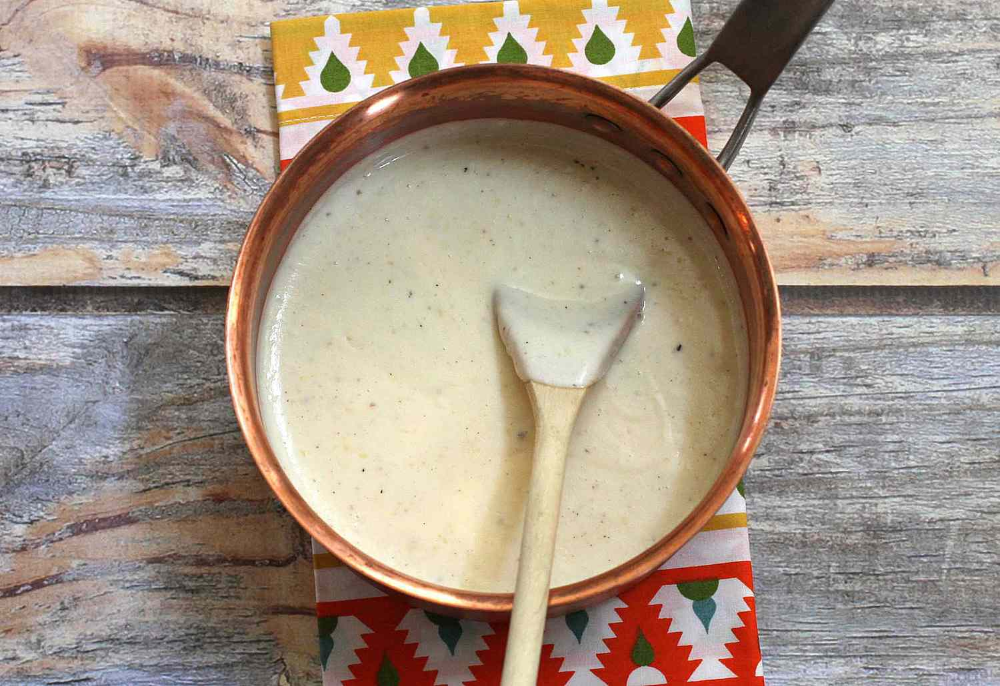
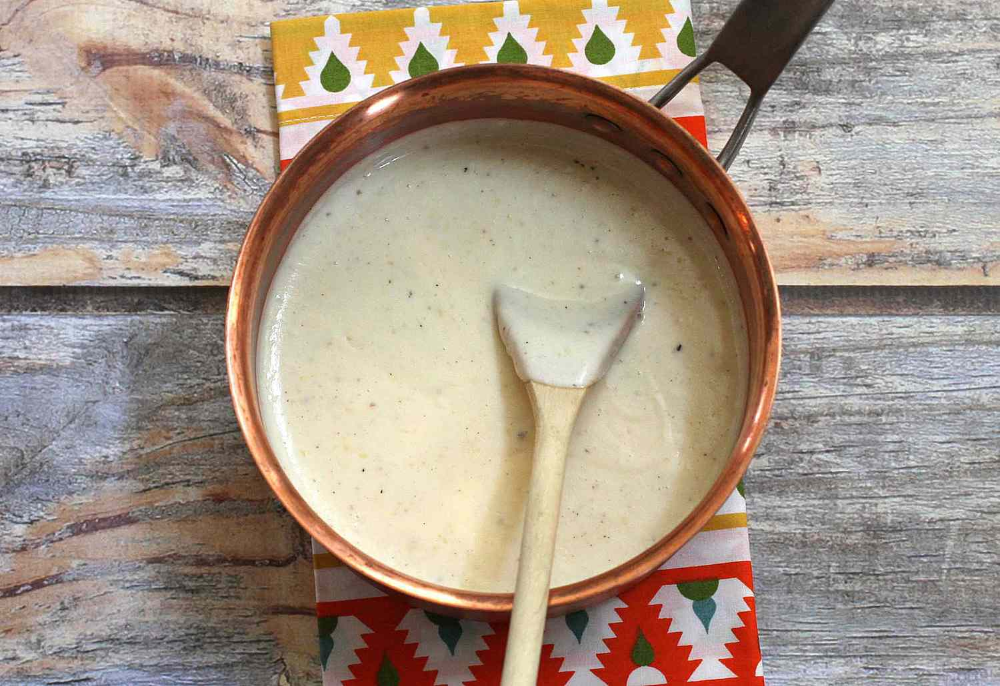

White Sauce Pasta
Origin: France/Italy Source: Own Recipe Category: Main Dish
White sauce pasta is a creamy and savory dish that can be enjoyed for either lunch or dinner. Inspired by a fusion of Italian and French cuisine, the rough texture of rigatoni pasta allows for heavier sauces to be picked up, including the flavor profile of this delicious sauce. This union of two cultures allows for the perfect balance between each component of the recipe, creating a fulfilling entree that every individual can enjoy.
Recipe Ingredients
- Olive Oil
- Butter
- Diced Onion
- Diced Garlic
- Diced Bell Pepper
- Rigatoni Pasta
- Heavy Whipping Cream
- Milk
- Shredded Parmesan Cheese
- Salt
- Ground Pepper
- Garlic Powder
- Onion Powder
- Paprika
- Oregano Leaves
- Bay Leaves
- Parsley Leaves
Recipe Steps
- Bring a pot of water to a boil. Once the water begins to bubble, add in the pasta, salt, and a drizzle of oil.
- While the pasta is cooking, heat oil and butter in a saucepan.
- Once the butter has melted, add in diced onions and garlic. Sauté them until golden brown or aromatic.
- Stir in the bell pepper until slightly softened.
- Pour in the heavy cream, milk, salt, ground pepper, garlic powder, onion powder, paprika, oregano leaves, and bay leaves into the saucepan. Mix well and allow for the mixture to simmer. Adjust the seasoning to your taste.
- Add the shredded parmesan cheese and stir until melted.
- Throw in pasta and mix until the pasta is coated with the creamy sauce.
- Garnish with parsley leaves, and enjoy.
Additional Food Images

 
